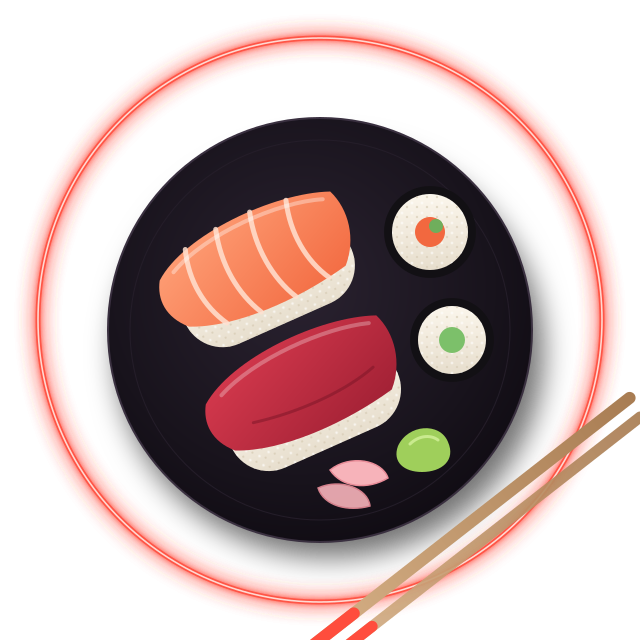

Sushi bar · Kraków · od 17:00
NEONNAMI
Sushi po zmroku.
Nigiri krojone przy ladzie, autorskie uramaki i lada omakase na dziesięć miejsc. Wpadnij na kolację albo późny set po koncercie.

Piątek i sobota · 20:00
Lada omakase
Dziesięć miejsc przy ladzie, czternaście serwowań i szef kuchni, który decyduje, co dziś najlepsze.
- Czas
- ok. 2 godziny
- Miejsca
- 10 przy ladzie
- Cena
- 290 zł / os.
Odwiedź nas
Godziny i dojazd
| Poniedziałek | zamknięte |
|---|---|
| Wtorek | 17:00 – 23:00 |
| Środa | 17:00 – 23:00 |
| Czwartek | 17:00 – 23:00 |
| Piątek | 17:00 – 01:00 |
| Sobota | 17:00 – 01:00 |
| Niedziela | 16:00 – 22:00 |
adres fikcyjny — projekt demonstracyjny
Stolik lub lada
Rezerwacja
Wybierz dzień — godziny dopasują się do tego, kiedy jesteśmy otwarci. Dla grup powyżej 8 osób przygotowujemy osobną ofertę.
To formularz demonstracyjny. Sprawdza poprawność danych i pokazuje podsumowanie, ale niczego nie wysyła ani nie zapisuje. Nie wpisuj prawdziwych danych.
Podsumowanie (demo)
Rezerwacja przygotowana — nie została wysłana
W wersji produkcyjnej restauracja otrzymałaby powiadomienie, a gość — potwierdzenie e-mail lub SMS. Ten projekt pokazowy nie przesyła ani nie zapisuje danych.